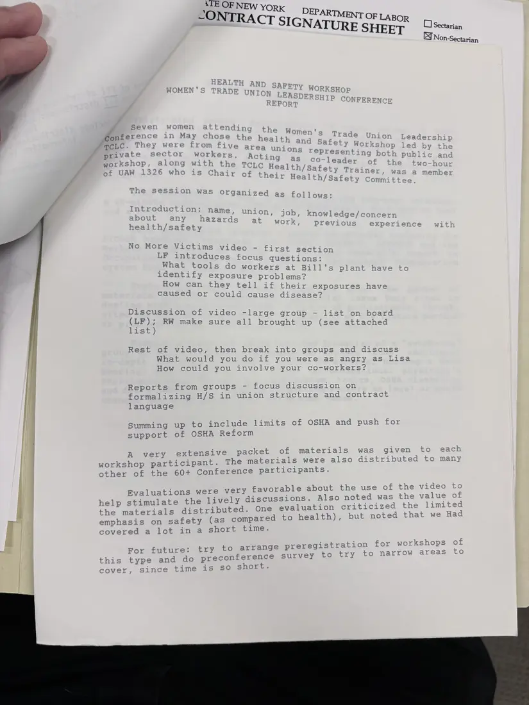
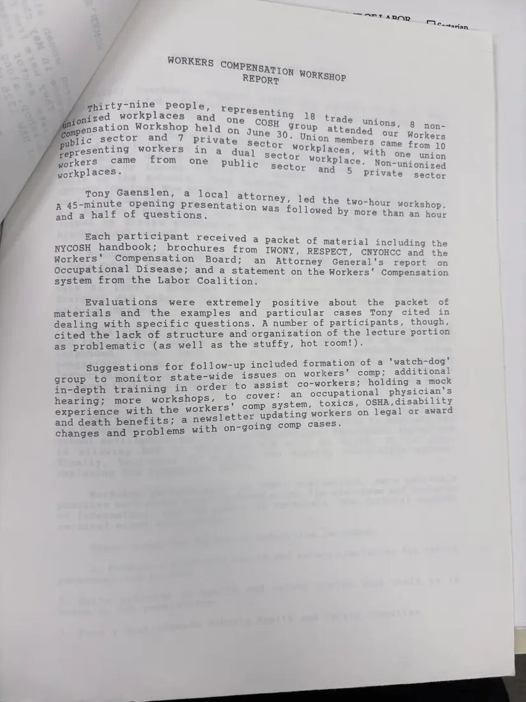
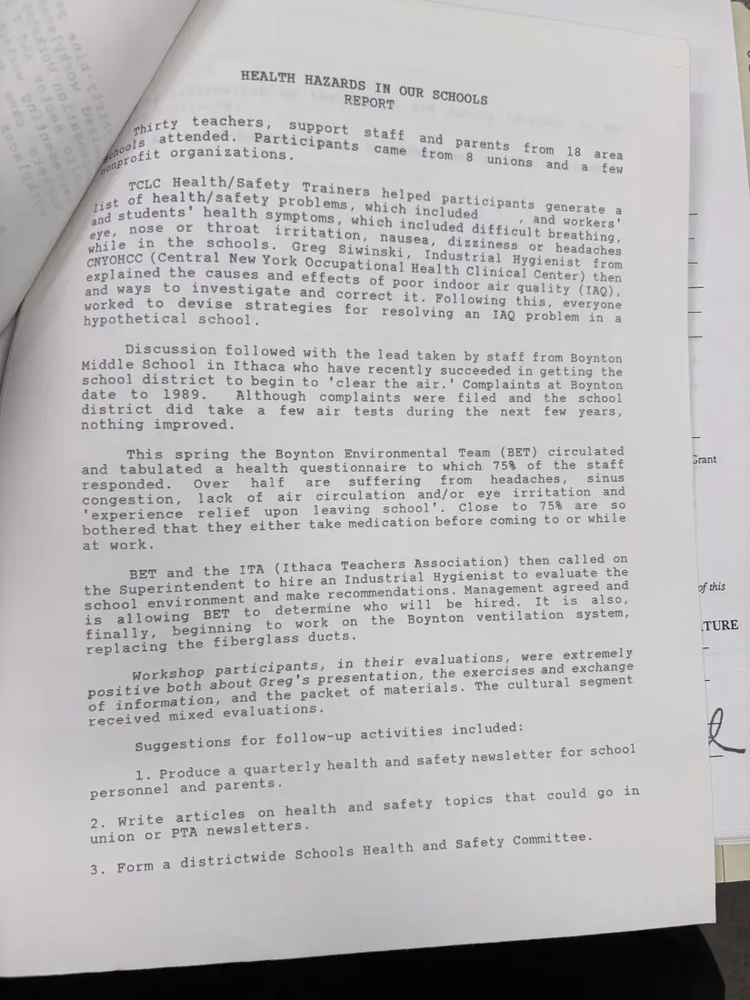
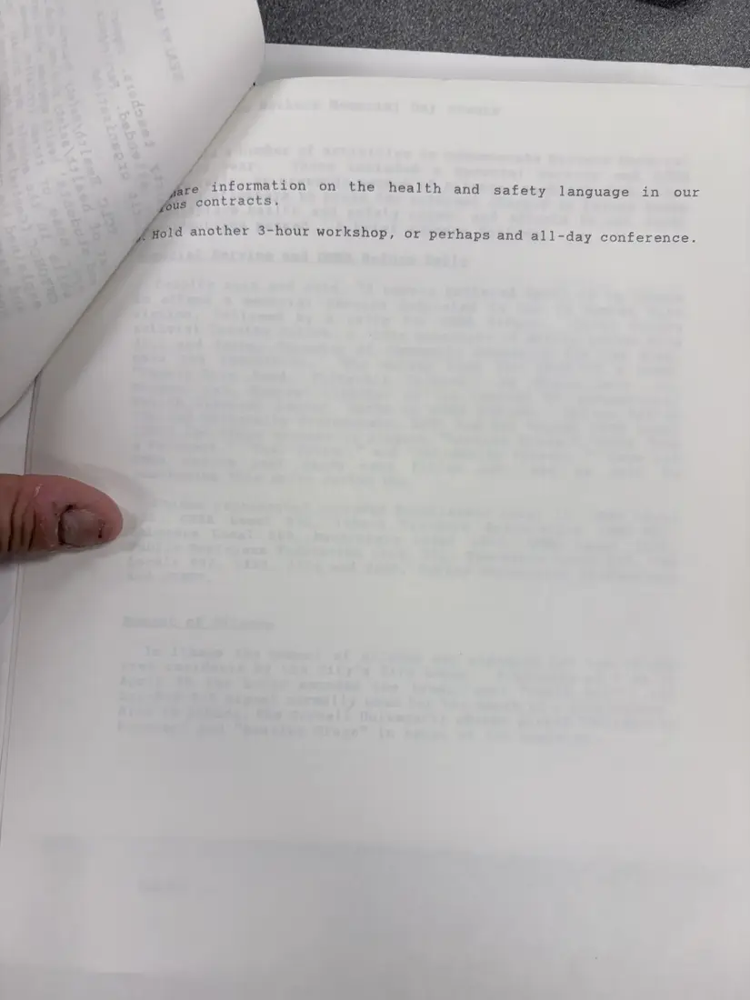

Report, 4 pages
Workshop reports: women workers, workers' compensation, and school hazards, 1992
[May–June 1992]Date inferred
Reports on three workshops: a health and safety session at the Women's Trade Union Leadership Conference, a workers' compensation workshop led by attorney Tony Gaenslen for 39 people from 18 unions, and “Health Hazards in Our Schools” for teachers, support staff, and parents, which followed indoor air complaints at Boynton Middle School. Each report sums up participants' evaluations and suggested follow-up.
The dates come from the 1991–92 annual report. The last page is the end of a report, which one is unclear. A second photograph of the school hazards report is not shown.
Download or cite this itemPages


(open zoom view)Read the page text (machine-read, contains errors)
This text was generated automatically from the photograph and has not been corrected. The image is the authoritative record.
NATURE SHEET OD Sectarian EX Non-Sectarian WOMEN'S TRADE Sevel women att ending +} , 3 Cre Women' T+ iors, Conference in May chose the health nda ; ade Unior Badar a } sre Y 4 ana safet A 7 MCLC. They were from five area unions ape a p led by ive sec , ns ~presenting ‘ 4 private sector workers. Acting workshop, along with the TCLC Healt] of UAW 1326 who is Chair of their co-leader ee ‘ ader +} wo haut i/Safety Traine Health/Safety Committe eer Seer Weas Organized, as_ follows: ion: name, unior , knowledge/concerr previous ex No More Victims video - firs LF introduces focus que Discussion of video -large group - lis (LF); RW make sure all brought up (see a list) Rest of video, then break into groups and discuss What would you do if you were as angry as Lisa How could you involve your co-workers? Reports from groups - focus discussion on formalizing H/S in union structure and contract language Summing up to include limits of OSHA and push for support of OSHA Reform A very extensive packet of materials was” given workshop participant. The materials were also distributed other of the 60+ Conference participants. Evaluations were very favorable about the use of the vided to -imulate the lively discussions. Also noted Maa She ae t i i i tion criticized eli e ld the materials distributed. One evalua m . empbania on safety (as compared to health), but noted that we Had | covered a lot in a short time. wha help and for workshop fure: - be reregistration ops For future: try he areenee vig narrow areas this type and do preconference survey fo try to cover, Since time is so short.


(open zoom view)Read the page text (machine-read, contains errors)
This text was generated automatically from the photograph and has not been corrected. The image is the authoritative record.
T ARMR = Canaria i teataaed people, onized workpiaces and one Co 4 pensation Workshop held on Renae be attended ees 8 non- public sector and 7 private beet - Union members Workers Vyepresenting workers in a vt Came from 10 dual with se one i workers came from one public ctor workplace bets sector - Non-unionized workplaces. and “S ' private “sécter ony Gaenslen, a local atto ed t & TX rney, 1 w ' ' M 11 he t ie) hour workshop. A SF as go Opening AEA S EAS: was followed by more than an hour Each participant received a i quc ae ae packet of material including the IWONY, RESPECT, CNYO Workers" Compensation Board; an Attorney cdiceayratucagaes ps Occupational Disease; and a statement on the Workers’ Compensation system from the Labor Coalition. Evaluations were extremely positive about the packet of materials and the examples and particular cases Tony cited in dealing with specific questions. A number of participants, though, cited the lack of structure and organization of the lecture portion as problematic (as well as the stuffy, hot room!). Suggestions for follow-up included formation of a ‘watch-dog' group to monitor state-wide issues on workers’ comp; additional in-depth training in order to assist co-workers; holding a mock hearing; more workshops, to cover: an occupational physician s kers' comp system, toxics, OSHA, disability wsletter updating workers on legal or award h on-going comp cases. experience with the wor and death benefits; a ne changes and problems wit


(open zoom view)Read the page text (machine-read, contains errors)
This text was generated automatically from the photograph and has not been corrected. The image is the authoritative record.
‘rty teachers - * Support sg 0 attended. Participant prorit organizations. s and Pp arents fro Ss from 18 Med anions cand Mba mcLC Health/Safet few Y Trad jist of health/safety rainers helpe Problems, whichrod Participants * students’ health symptoms Beg included ERT apt be a eye, nose or throat irritation heliee tt difficult breathing, ' Oe, Olesiness or festa nt?’ while in the schools. Gre iwi cnyoHcc (Central New York ipataener: aire Hygienist “fron eN1ist xplained the caus ealth Clinic _ from end ways to Shubbtipare roeac of poor badaee wee hed ody, then ; eee ue quality (1AQ) worked to devise stra correct it. Following this y (IAQ), , Sveryone tegies for IAQ problem in a hypothetical school. resolving an Discussion followed wi ith the lead tak b f prune Beco! in Ithaca who have culent i auc aeaed AR ~ Paar to begin to 'clear the air.' Complaints at Boynton : Although complaints were filed and the school district did take a few air a t i t : ew years : ests during the nex 34 , from Boynton n getting the This spring the Boynton Environmental Team (BET) circulated and tabulated a health questionnaire to which 75% of the staff responded. Over half are suffering from headaches, sinus congestion, lack of air circulation and/or eye irritation and "experience relief upon leaving school’. Close to 75% are so bothered that they either take medication before coming to or while at work. BET and the ITA (Ithaca Teachers Association) then called on the Superintendent to hire an Industrial Hygienist to evaluate re school environment and make recommendations. Management Sc Tae i llowing BET to determine who will be hired. It is also, eee beginning to work on the Boynton ventilation system, replacing the fiberglass ducts. ici i i luations, were extremely articipants, in their eva ’ i SORE aut Greg's presentation, the exercises and exqnangs aise S80 and the packet of materials. The cultural segmen oO 1n ! received mixed evaluations. Suggestions for follow-up activities included: 4 1 1. Produce 4 quarterly health and safety newsletter for schoo personnel and parents. | We rl rey algal Write articles on health and safety topics that could 9g 22 TA union oF PTA newsletters. wide Schools Health and Safety Committee. 3 Mormag district Srant of this TURE


(open zoom view)Read the page text (machine-read, mostly readable)
This text was generated automatically from the photograph and has not been corrected. The image is the authoritative record.
fre information on the health and safety language in our Bus contracts. Hold another 3-hour workshop, or perhaps and all-day conference.
See something wrong, or recognize a person or event? Send a correction. If you hold rights in this item or think it should not be public, write to the same address.